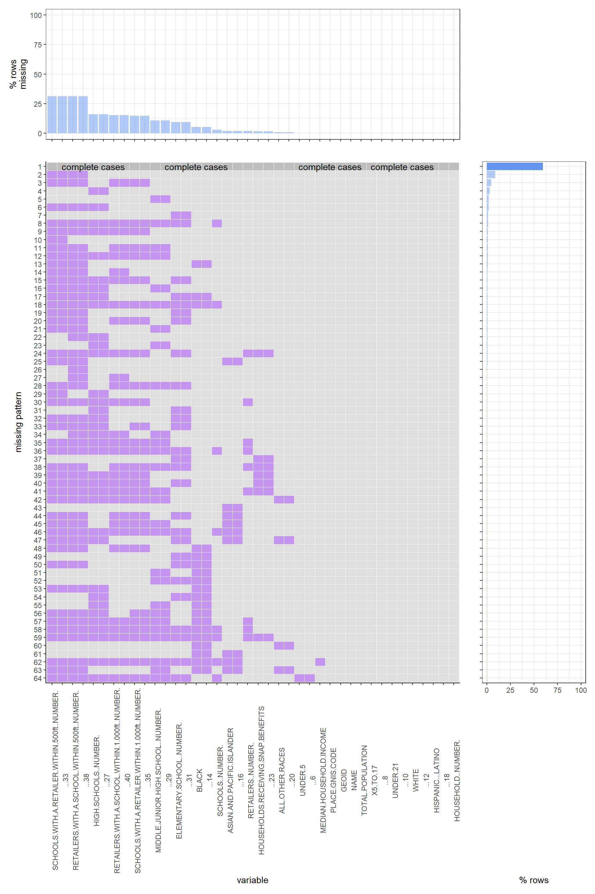
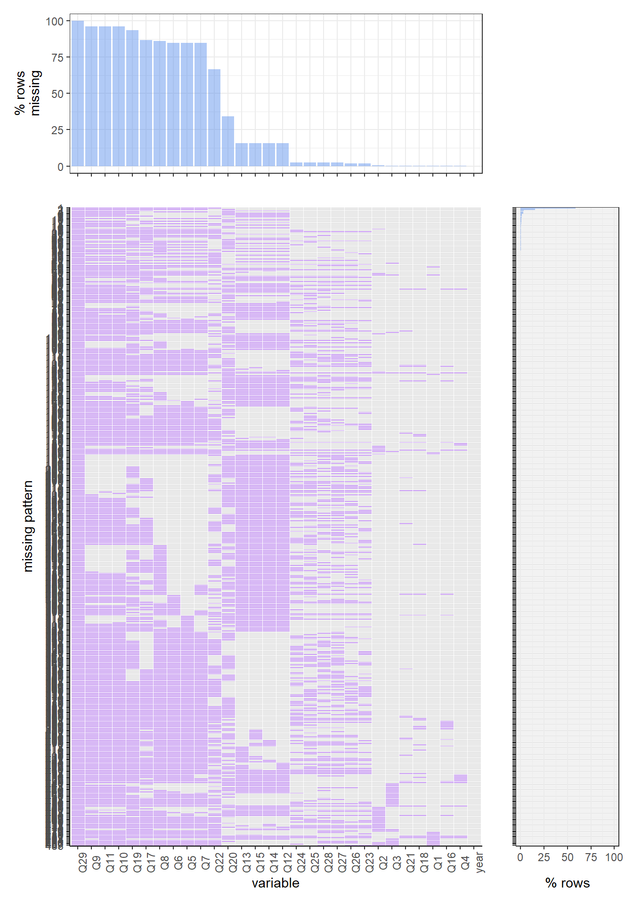
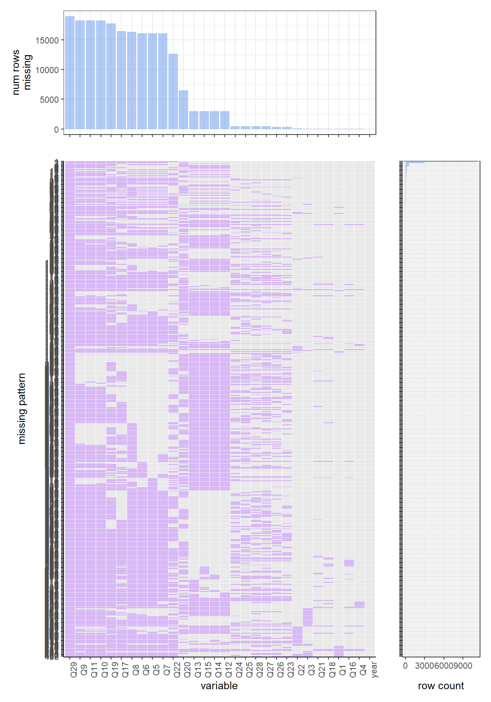

Chapter 4 Missing values
Missing values existed in almost every data set. To analysis missing value patterns, we created a plot_missing() function. By inputting a data set into this function, we can easily see all missing patterns in our data set. We can find the most common missing pattern and see which variable is the most common missing variable. Before analyzing our data set, let’s do some example analysis by using data sets from packages as input for our function and vividly explaining their corresponding result.
4.1 Using Dataset From fivethirtyeight


For our first example, we analyze the data set avengers from the package fivethirtyeight. The above missing values plot was created from a data set created by Walk Hickey, an author at FiveThirtyEight. The data set was created to observe the mortality rate of different characters in the Marvel universe who signed on to the join the Avengers.
According to this figure, we can clear see the missing value pattern of the data set. We can start with the complete cases: As we can see by the dark grey row with the “complete cases” label, there are 10 columns in the data that do not have any missing values. Compared to the missing values pattern, complete cases in this data set are very hard to see.
However, for the missing value pattern, there is another story. We can see that the most common missing value pattern is having eleven missing variables. The eleven missing variables are: death4, return4, death5, return5, death3, return3, probationary_intro, return2, death2, return1 and notes. There are around 76 rows which have such a pattern in this data set. The second most common missing pattern is missing 9 variables. The nine variables are: death4, return4, death5, return5, death3, return3, probationary_intro, return2 and death2. In the whole data set of 173 rows, there are around 42 rows which have such a pattern. For the whole 21 variables in our data set, there are six variables that are the most common missing variables: death4, return4, death5, return5, death3, and return3. For each of those variables, there are around 160 rows, which is around 10% of the whole data set, missing them. The next three most common missing variables are probationary_Intro, return2, and death2. For each of those three variables, there are around 150 variables, which is around 10% of the whole data set, missing them. For the variable return1 and notes, there are around 100 rows, which is around 8% of the whole data set, missing them separately. For columns that do have missing values, just under 75% of them are only missing one or two values. For the whole 21 variables in our data set, we can see that death4, return4, death5, return5, death3, and return3 have the majority of their column values missing. In the context of the problem, it makes sense that if the death# value is missing, then the return# value is also missing because a character cannot return from being dead if they were not killed in the first place. Additionally, we should expect the death# value to be missing for larger numbers (i.e. 3, 4, 5) if the character has not returned from being killed after death1 or death2. The probationary_intro column also has a good amount of missing values and after a bit of research into the meaning of this column, we know that this column contains values for the data that a character was given probationary status as an Avenger. Since characters can be introduced as full or reserve Avengers without taking on the probationary status, we would expect this column to be missing values for characters who skipped the probationary period. As a result of this, we would also expect the full_reserve_avengers_intro column to contain values for characters who had a missing value for the probationary_intro column and also for characters who “graduated” from the probationary period and became a full or reserve Avenger. We can see from the plot that this holds true with the full_reserve_avengers_intro column colored as mostly light grey except for missing pattern 13 and 14 where probationary_intro is light grey and for missing pattern 4 where it is purple for both columns. death2 and return2 have many missing values, but less so than the greater number of deaths and resurrections which makes sense because it is pretty common for a character to die in the Marval universe. For the notes column, the missing values should correspond to characters who have not died since the value is a description of deaths and resurrections. The missing values in the name_alias column are actually a problem for this data set since this column is supposed to full name or alias of the character. Inspecting the data a bit further, it looks like the url values contain the name of the characters so we would be able to fill in these missing values if it was necessary to report statistics about specific characters for an analysis.
4.2 California Tobacco Health Assessment Tool (https://cthat.org/).
Note: There are multiple sheets in this dataset (California, County, City, DesignatedPlace, Unincorporated, ZCTA) which have different ways of grouping for data in California. In this chapter we are looking at County level and City level.
Besides the avengers’ data set, we also find another two data sets and plot the missing value patterns. For those two data sets, one thing needed to be claim is that those data sets have variables in two forms, the first form is named with variables’ names which is the count of values, the second form is named with number and stands for the percentage of the value in that variable column. Accordingly, for this condition, the two forms of data will both be missing values if either one of them is missing value.
## # A tibble: 6 x 39
## GEOID NAME `TOTAL POPULATI~ `UNDER 5` ...5 `5 TO 17` ...7 `UNDER 21` ...9
## <chr> <chr> <dbl> <dbl> <dbl> <dbl> <dbl> <dbl> <dbl>
## 1 06001 Alam~ 1656754 96849 0.0585 247178 0.149 402545 0.243
## 2 06003 Alpi~ 1039 44 0.0423 157 0.151 236 0.227
## 3 06005 Amad~ 38429 1527 0.0397 4320 0.112 7007 0.182
## 4 06007 Butt~ 225817 12384 0.0548 33055 0.146 58638 0.260
## 5 06009 Cala~ 45514 1902 0.0418 5909 0.130 9012 0.198
## 6 06011 Colu~ 21454 1576 0.0735 4266 0.199 6750 0.315
## # ... with 30 more variables: WHITE <dbl>, ...11 <dbl>, BLACK <dbl>,
## # ...13 <dbl>, ASIAN AND PACIFIC ISLANDER <chr>, ...15 <dbl>,
## # HISPANIC / LATINO <dbl>, ...17 <dbl>, ALL OTHER RACES <dbl>, ...19 <dbl>,
## # HOUSEHOLD (NUMBER) <dbl>, HOUSEHOLDS RECEIVING SNAP BENEFITS <dbl>,
## # ...22 <dbl>, MEDIAN HOUSEHOLD INCOME <dbl>, SCHOOLS (NUMBER) <dbl>,
## # HIGH SCHOOLS (NUMBER) <chr>, ...26 <dbl>,
## # MIDDLE/JUNIOR HIGH SCHOOL (NUMBER) <chr>, ...28 <dbl>, ...For the county data set, we can clearly see that this data set only has three missing value patterns and the majority of the data comprised of complete rows of data (complete cases are the most common pattern). For the whole 58 rows data set, around 55 rows are complete cases. There are another three missing value patterns which all have similar probabilities. For those variables which may have missing values, the most common missing variables are RETAILER.WITHIN.500ft_NUMBER and SCHOOLS.WITHIN.500ft_NUMBER. For each of those two variables, in the total 58 rows data set, there are two rows missing them separately. The next several common missing variables are ASIAN.AND.PACIFIC.ISLANDER, HIGH.SCHOOL_NUMBER, SCHOOLS.WITH.A.RETAILER.WITHIN.1.000FT.NUMBER, and RETAILERS.WITH.A.SCHOOLWITHIN1.000FT.NUMBER. For each of those variables, there are one row missing them separately.
## # A tibble: 6 x 40
## `PLACE GNIS COD~ GEOID NAME `TOTAL POPULATI~ `UNDER 5` ...6 `5 TO 17` ...8
## <chr> <chr> <chr> <dbl> <chr> <dbl> <dbl> <dbl>
## 1 02409663 0600~ Adel~ 33660 2917 0.0867 8746 0.260
## 2 02409666 0600~ Agou~ 20533 836 0.0407 3559 0.173
## 3 02409669 0600~ Alam~ 78522 4689 0.0597 11267 0.143
## 4 02409674 0600~ Alba~ 19804 1383 0.0698 3758 0.190
## 5 02409681 0600~ Alha~ 84647 4093 0.0484 10239 0.121
## 6 02409683 0600~ Alis~ 50663 3570 0.0705 8895 0.176
## # ... with 32 more variables: UNDER 21 <dbl>, ...10 <dbl>, WHITE <dbl>,
## # ...12 <dbl>, BLACK <chr>, ...14 <dbl>, ASIAN AND PACIFIC ISLANDER <chr>,
## # ...16 <dbl>, HISPANIC / LATINO <dbl>, ...18 <dbl>, ALL OTHER RACES <chr>,
## # ...20 <dbl>, HOUSEHOLD (NUMBER) <dbl>,
## # HOUSEHOLDS RECEIVING SNAP BENEFITS <chr>, ...23 <dbl>,
## # MEDIAN HOUSEHOLD INCOME <chr>, SCHOOLS (NUMBER) <chr>,
## # HIGH SCHOOLS (NUMBER) <chr>, ...27 <dbl>, ...For the city data set, although the data set have a larger size than the previous data set, the majority of data is still comprised of complete rows of data (complete cases are the most common pattern). For the whole 483 rows, there are around 290 rows which have completely no missing values. For all other missing value patterns, the most common pattern is missing 4 variables, which are SCHOOL.WITH.A. RETAILER.WHITHIN. 500FT.NUMBER, RETAILERS.WITHIN.A. SCHOOL.WITHIN.500FT.NUMBER, SCHOOLS.WITH.A.RETAILER.WITHIN.1.000.NUMBER and RETAILER.WITH.ASCHOOL.WITHIN.1.000_NUMBER. There are around 40 rows that have this pattern in the data set, with 483 rows. Another widespread missing pattern is missing only one variable, HIGH.SCHOOL. NUMBER. There are around 25 rows that have this pattern in the whole 483 rows data set. For all the variables that existed in the data set, the two variables which are highly possible to have missing values are SCHOOL.WITH.A. RETAILER.WHITHIN. 500FT.NUMBER, and RETAILERS.WITHIN.A. SCHOOL.WITHIN.500FT.NUMBER. For each of them, there are 150 rows missing them separately. HIGH.SCHOOL. NUMBER., SCHOOLS.WITH.A.RETAILER.WITHIN.1.000.NUMBER and RETAILER.WITH.ASCHOOL.WITHIN.1.000_NUMBER are the next three most possible variables which may has missing values. For each of those variables, there are around 75 rows have missing values in them separately.
4.3 Youth smoking data set
Now, we use our data as input and analyze its missing values patterns. Before plotting the missing values pattern, we first need to delete several questions from our data set. Among our data set, several questions, like what race you are, and each race represented a single question, which only allows our participants to choose one race and lead to all other questions missing values, should not be considered into our missing values pattern. Thus, we delete those questions before running the plotting function. Another thing that needs to be mentioned is that we will analyze the data set year by year since our data set is extensive. By doing this, the final result is more precise and easy to understand.
Here is a reference of questions.
[1] "How old are you?"
[2] "What is your sex?"
[3] "What grade are you in?"
[4] "Have you ever smoked a cigarette, even one or two puffs?"
[5] "How old were you when you first smoked a cigarette, even one or two puffs?"
[6] "About how many cigarettes have you smoked in your entire life?"
[7] "During the past 30 days, on how many days did you smoke cigarettes?"
[8] "When was the last time you smoked a cigeratte, even one or two puffs? (Please choose the first answer that fits)"
[9] "During the past 30 days, on the days you smoked, about how many cigarettes did you smoke per day? A pack usually has 20 cigarettes in it."
[10] "During the past 30 days, what brand of cigarettes did you usually smoke?"
[11] "Menthol cigarettes are cigarettes that taste like mint. During the past 30 days, were the cigarettes that you usually smoked menthol?"
[12] "Have you ever been curious about smoking a cigarette?"
[13] "Do you think that you will try a cigarette soon?"
[14] "Do you think that you will smoke a cigarette in the next year?"
[15] "If one of your best friends were to offer you a cigarette, would you smoke it?"
[16] "Have you ever smoked a cigar, cigarillo, or little cigar, even one or two puffs?"
[17] "How old were you when you first smoked a cigar, cigarillo, or little cigar, even one or two puffs?"
[18] "Have you ever used chewing tobacco, snuff, or dip, even just a small amount?"
[19] "How old were you when you first used chewing tobacco, snuff, or dip, even just a small amount?"
[20] "Have you ever been curious about using an e-cigarette?"
[21] "Have you ever used an e-cigarette, even once or twice?"
[22] "How old were you when you first used an e-cigarette, even once or twice?"
[23] "When you are using the Internet, how often do you see ads or promotions for cigarettes or other tobacco products?"
[24] "When you go to a convenience store, supermarket, or gas station, how often do you see ads or promotions for cigarettes or other tobacco products?"
[25] "When you watch TV or streaming services (such as Netflix, Hulu, or Amazon Prime), or go to the movies, how often do you see ads or promotions for cigarettes or other tobacco products?"
[26] "When you are using the Internet, how often do you see ads or promotions for e-cigarettes?"
[27] "When you go to a convenience store, supermarket, or gas station, how often do you see ads or promotions for e-cigarettes?"
[28] "When you watch TV or streaming services (such as Netflix, Hulu, or Amazon Prime), or go to the movies, how often do you see ads or promotions for e-cigarettes?"
[29] "How often do you see posts related to e-cigarettes when you go on social media (such as YouTube, Instagram, Snapchat, Twitter, or Facebook)?" 
Let’s first look at the 2020 year’s data set. By running the function, we find the most common missing variable is Q29, which, according to the codebook, is the question ’During the past 30 days, what brand of cigarettes did you usually smoke’. This question is almost missed in every single row. The most common missing value pattern for the 2020 data set is missing “q29, q27, q30, q45,q36, q26, q23, q24, q25”, which correspondingly are “During the past 30 days, what brand of cigarettes did you usually smoke?”, “During the past 30 days, on the days you smoked, about how many cigarettes did you smoke per day? A pack usually has 20 cigarettes in it.”, “Menthol cigarettes are cigarettes that taste like mint. During the past 30 days, were the cigarettes that you usually smoked menthol?”, “How old were you when you first used chewing tobacco, snuff, or dip, even just a small amount?”, “How old were you when you first smoked a cigar, cigarillo, or little cigar, even one or two puffs?”, “When was the last time you smoked a cigeratte, even one or two puffs? (Please choose the first answer that fits)”, “How old were you when you first smoked a cigarette, even one or two puffs?”, “About how many cigarettes have you smoked in your entire life?”, and “During the past 30 days, on how many days did you smoke cigarettes?”. For the whole 2020 data set, almost 70 percent rows have missing values for those variables.
Now let us look at the 2019 data set. We can find that the most common missing variable are q27, q30, q29, which are “During the past 30 days, on the days you smoked, about how many cigarettes did you smoke per day? A pack usually has 20 cigarettes in it.”, “Menthol cigarettes are cigarettes that taste like mint. During the past 30 days, were the cigarettes you usually smoked menthol?”, and “During the past 30 days, what brand of cigarettes did you usually smoke?”. There is around 90 percent of the rows are missing those values. The most common missing value pattern is missing q27, q30, q29, q45, q36, q26, q24, q25, q23. Which are “During the past 30 days, on the days you smoked, about how many cigarettes did you smoke per day? A pack usually has 20 cigarettes in it.”, “Menthol cigarettes are cigarettes that taste like mint. During the past 30 days, were the cigarettes you usually smoked menthol?”, “During the past 30 days, what brand of cigarettes did you usually smoke?”, “How old were you when you first used chewing tobacco, snuff, or dip, even just a small amount?”, “How old were you when you first smoked a cigar, cigarillo, or little cigar, even one or two puffs?”, “When was the last time you smoked a cigarette, even one or two puffs? (Please choose the first answer that fits)”, “About how many cigarettes have you smoked in your entire life?”, “During the past 30 days, on how many days did you smoke cigarettes?”, and “How old were you when you first smoked a cigarette, even one or two puffs?”. There are around 60 percent of rows have such a missing pattern.

For the 2018 data set, the missing values patterns have a huge difference with 2019 and 2020. For this year, the complete case is the most common pattern. There is around 80 percent of rows have such a pattern. This year’s most common missing variable is q44, which is the question “Have you ever used chewing tobacco, snuff, or dip, even just a small amount?”. Around 420 rows in the 2018 data set have missing values on this variable.
For the 2017 data set, the pattern is very similar to 2018. The complete case is the most common missing value pattern, and around 85 percent of rows have such a pattern. The most common missing variable here is also q44, which is “Have you ever used chewing tobacco, snuff, or dip, even just a small amount?”, and there are around 300 rows have missing values on this variable.
For the 2016 data set, the most common missing values pattern is still the complete case, and there is around 85 percent of rows have such a pattern. The most common missing variable here is q17, which is “Have you ever been curious about using an e-cigarette?”, and there are around 500 rows that have missing values on this variable.
In conclusion, by observing the overall five years missing values patterns’ plot, we can find that participants in 2019 and 2020 do not pay enough attention to the smoking issue. For these two years, there are many questions with missing values, and the whole data set has clear missing value patterns, which can be interpreted as those participates do not take the smoking problems seriously at all, they do not remember what brand of cigarettes they are smoking, they do not remember when is the first time they smoke, they do not remember how many cigarettes they smoke in the past month… All of those just showed how indifferent attitudes they have when asked about their smoking issue. Those indifferent attitudes did not even exist in 2018, 2017, and 2016, which clearly showed how the youth smoking problem became more and more serious those days.